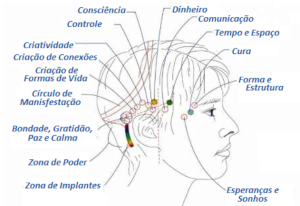
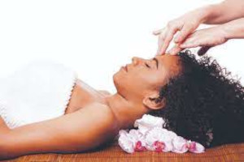

O que é Barras de Access ?
Barras de Acces é uma técnica de expansão da consciência criada pelo norte-americano Gary Douglas há quase três décadas, são pontos de acesso à nossa consciência, ao todo são 32 pontos que temos ao redor da nossa cabeça, cada um deles tem relação com algum aspecto de nossa vida, como: criatividade, sexualidade, dinheiro, sonhos, controle, poder, tristeza, paz, alegria e calma, entre outros.
Nesses pontos ficam depositadas todas as decisões, pensamentos, lembranças e crenças que já tivemos em algum momento de nossa vida, tudo isso fica no nosso subconsciente, e na maioria das vezes, sem que possamos perceber, tomamos como verdade pontos de vistas fixos, criando padrões comportamentais e as reações programadas.
Como funciona ?
A sessão de Barras de Access dura em média uma hora e não existem contraindicações, qualquer pessoa pode fazer, seja criança, idoso, gestante ou pessoas com problema de saúde.
Durante o procedimento, com o paciente deitado, o profissional toca levemente e sequêncialmente nos 32 pontos energéticos da pessoa, diminuindo assim nossas ondas cerebrais, permitindo o acesso à consciência, liberando o fluxo das energias acumuladas, fazendo uma limpeza dos registros que bloqueiam nossa vida, reprogramando nosso cérebro.